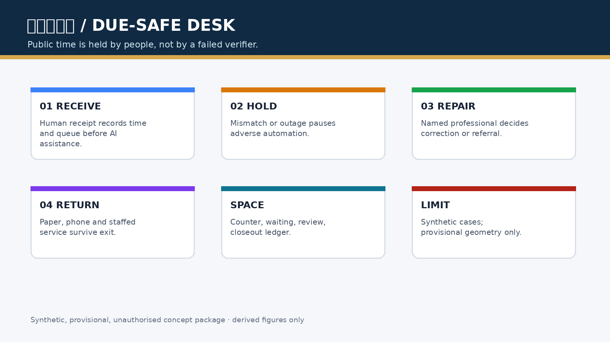
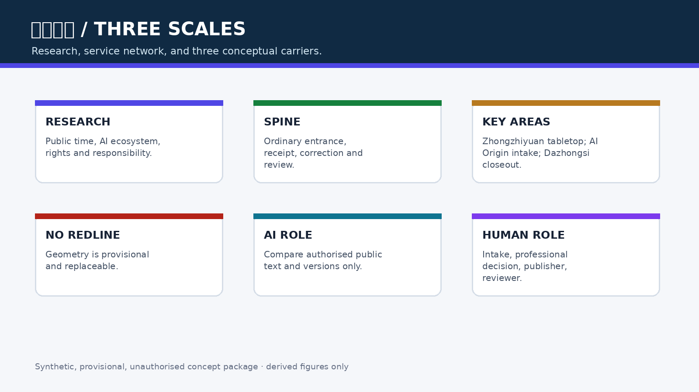
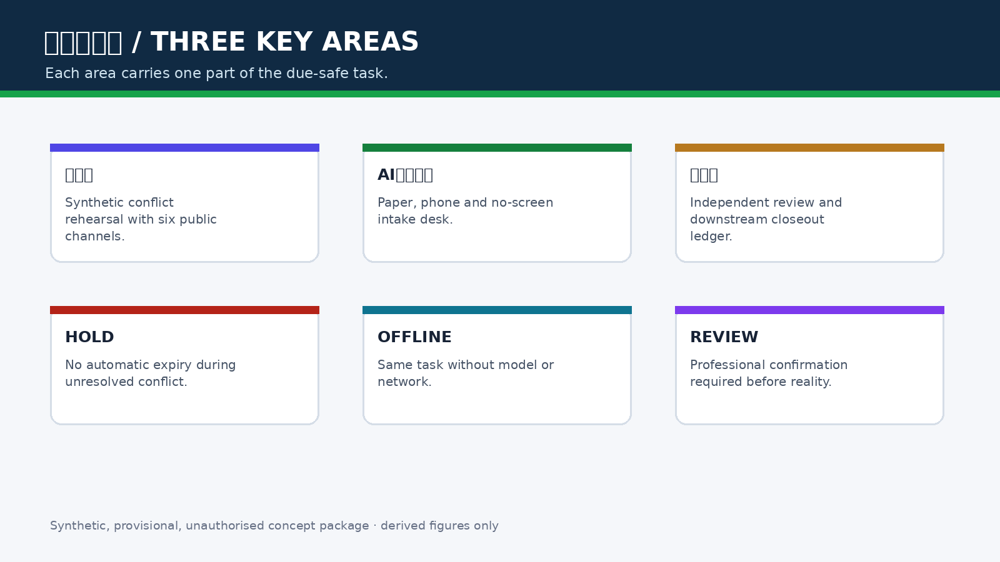
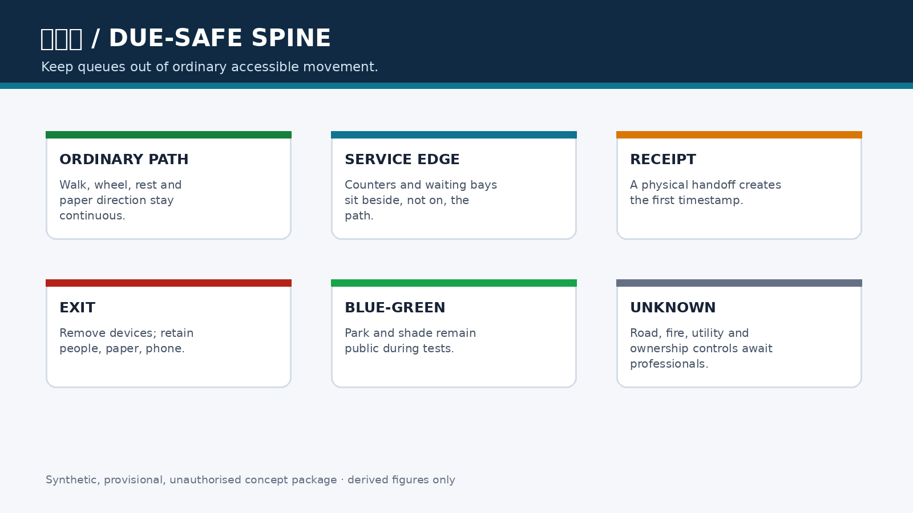
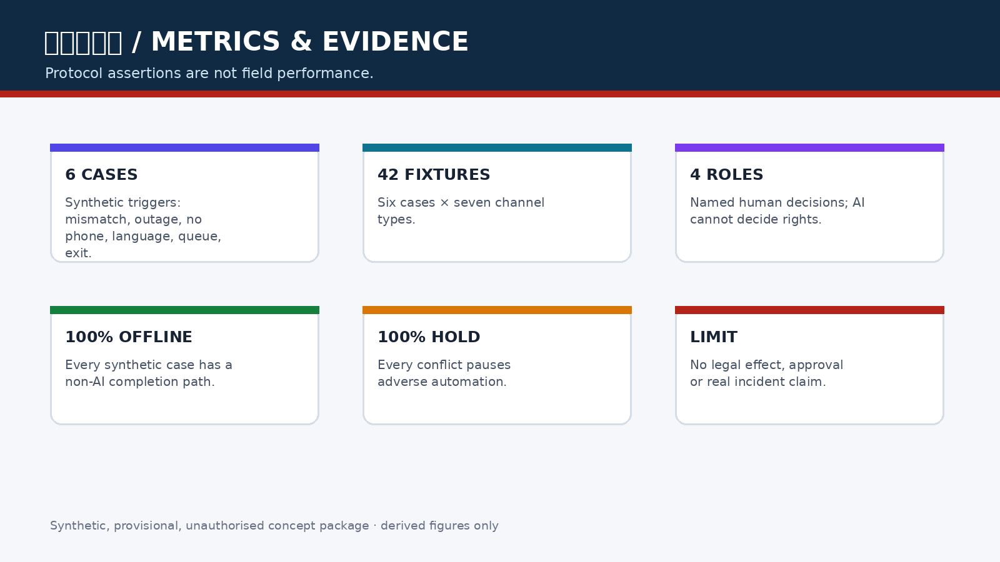

京张保期台 / JINGZHANG DUE-SAFE DESK
把公共服务的原始收件日与排队位置从自动核验中隔离出来：保期台先发人工回执，再让 AI 做可撤材料提示；失败不自动逾期，退出后实体受理继续。
京张保期台 / JINGZHANG DUE-SAFE DESK
设计依据与资料清单
本方案是面向专业团队深化的 formal 概念包。它使用公告、智能体任务书、来源登记、标准快照和临时几何；临时边界只用于 intake 讨论，不能作为红线、审批、面积或真实服务点依据。来源 来源 空间数据
公共问题不是“AI 够不够快”，而是一次机器核验失败、断网、字段不一致或供应商退出，是否会吞掉人的原始收件日、队列位置和补正机会。保期台不承诺行政期限暂停、资格结果或赔偿；它提出一条可审计的空间—服务链：先收件、再提示、人工决定、失败不自动失权、退出仍可人工受理。标准 深度

三层范围工作框架
统筹研究范围研究公共时间权、AI 创新生态和机构责任；总体设计范围把保期台组织为“保期脊”，由实体取号桌、无屏等候、人工补正、独立复核和副本撤换清单组成；重点区域范围分别承载合成桌演、人工受理和失败复盘。这样安排的设计意图是让研究问题、空间动作和公共结果一一对应：研究层提出谁承担时间损失，整体层把责任放入可见的入口与后场，重点层用合成案例检验是否真的能收件、补正、复核和退出。site_boundary.geojson 的 provisional 面积只供结构检查，key_areas.geojson 的三处载体只供布局讨论；正式边界、权属、道路红线和服务机构清单缺失时，不能把任何面积或位置写成法定结论，全部指标需在官方资料到位后重算。来源 深度 指标


统筹研究范围产业与未来城市研究
保期台把高校、企业、社区、公共服务机构、无障碍与法律专业者组织成“公开规则—人工回执—可撤提示—专业决定—退出复原”的创新链。AI 最小角色是比较经授权的公开文本/字段，标记渠道、版本、责任人和适用范围不一致，生成供人工修改的副本地图；AI 不判断资格、诚信、紧急程度、谁应占名额或哪份规则具有法律效力。来源 标准
命名识别使用“站台回执”视觉语汇：纸票形状、金色日期线和蓝色人工入口；Logo 仅为本方案原创方向，不使用他人字体、图片、商标或标识。国际传播、年度活动和开发者社区均为概念建议，不是已确定活动。深度
总体设计范围城市更新与控规深度城市设计
保期脊优先嵌入既有首层、社区服务前厅或公共空间边缘，不新增道路红线，不指认真实机构。空间顺序固定为：普通入口 → 纸面/电话回执 → 无屏等候 → 人工补正 → 独立复核 → 后场副本清单。任何数字入口都不能位于人工入口之前；退出时撤去临时设备，保留纸票、电话、人工版本表和去标识台账。空间数据 空间数据 深度
用地、建筑、道路、绿地、公共空间和分期图层均是设计提案，不是法定控制。FAR、高度、权属、道路红线、消防、文保和市政条件保持 unknown，待正式资料和专业复核后再决定保留、改造、移位或删除。标准 深度
重点区域详细设计
| 区域 | 概念任务 | 失败后的公共结果 |
|---|---|---|
| 众智园AI自主创新加速区 | 规则冲突与供应商退出的无个人数据桌演；比较网页、纸表、热线、机器人、API 六类副本 | 冲突期间保持 HOLD，不自动退回；无法核清则人工/纸面办理 |
| 北京AI原点社区 | 保期回执台、无屏补正桌、电话入口与争议封存柜；让无手机和跨语言者完成同一受理步骤 | 原始收到时间和队列号保留，补正由具名责任人处理 |
| 大钟寺AI产业聚集区 | 独立复核间、机构副本撤换清单和去标识失败年鉴 | 逐项关闭下游副本；AI 退出后实体受理继续 |
三处区域是 provisional_constraint 概念载体，不是实际窗口、权属或施工点。它们的差异在于分别检验冲突发现、人工受理和副本撤换，而不是把同一服务复制三次。空间数据 空间数据 深度 具体的第三处几何与面积仍待官方附件确认。
AI 创新生态、人才画像与 AI+ 场景
受影响者包括无手机居民、跨语言使用者、残障人士、照护者、夜间劳动者、一线受理员、专业审核人、维护人员和未来接手机构。具名决定角色是当班受理责任人、事项专业责任人、规则发布责任人和独立复核人；AI、供应商、普通前台和单一标牌不得单独改变资格或期限。指标 深度
| 场景卡 | 空间载体 | 机制与人工底线 |
|---|---|---|
| 01 保期回执台 | AI 原点社区 | 收到时间、队列号、缺口说明先由人工签发 |
| 02 规则冲突桌演 | 众智园 | 合成六类渠道冲突，暂停不利自动动作 |
| 03 无屏补正桌 | AI 原点社区 | 纸面、电话、多语和人工与数字入口同队列 |
| 04 队列保全演练 | AI 原点社区 | 重复提交、字段冲突不重置原始队列号 |
| 05 独立复核间 | 大钟寺 | 专业人员决定补正、转介、受理或拒绝 |
| 06 副本撤换清单 | 大钟寺 | 现场、网页、热线、机器人和 API 逐项回执 |
| 07 争议封存柜 | AI 原点社区 | 最小必要纸面记录，不公开个人事项 |
| 08 服务退出桌 | 三处重点区 | 关闭 AI 后复原人工、电话和纸面路径 |
| 09 多语缺口卡 | AI 原点社区 | AI 翻译可编辑，责任人确认内容 |
| 10 机构复盘年鉴 | 大钟寺 | 只公开去标识失败类型和恢复进度 |
| 11 无手机同入口 | AI 原点社区 | 不因拒绝数字入口降低服务等级 |
| 12 截止前拥堵桌演 | 众智园 | 先收件、后补正，不以自动拒绝换速度 |
其中 02、04、05 是产业/专业测试验证场景。最小原型使用六个合成人物和六类合成渠道，不使用真实案件、身份、服务记录或个人轨迹。指标 指标 深度
用地、建筑规模与拆改留方案
保期台优先“留”既有人工服务前厅，按“改”加入无障碍桌、纸票柜、版本墙和隔音复核间，只有在专业确认后才讨论“新”建可逆组件。保留既有前厅能让人工服务先于数字服务出现，改造内容则把日期、队列和版本显示成可读证据；拆除或迁移只在消防、无障碍、文保、产权和运维审查后讨论。metrics.json 中的面积和比例只从提交 GeoJSON 复算，建筑基底仅表示概念包络，不代表可建量；强度、容量、高度、产权、抗震、管线和工程结论保持 unknown，正式资料到位后必须同步重画图层、更新矩阵、刷新图件和重新自检。空间数据 指标 深度
交通、轨道、市政与公共服务设施
保期脊与慢行、轨道站点和普通服务入口相接，但不让排队侵入无障碍净通行；空间上把取号、等候和复核放在侧向服务边，把连续步行、轮椅、照护和应急通道保持为常路。纸面、电话、人工和静态导视形成断网时的同任务路径；设备、电源和网络均为可拆、可替换组件，退出时不会留下新的路障、门禁或排他标识。道路红线、站口人流、消防间距、管线、夜间照明、排水和运营班次目前缺少官方或现场资料，因此道路图层只表达关系，不表达工程线位；专业团队需用实测和授权条件重算容量与安全。空间数据 深度

蓝绿空间、公共空间与城市风貌
公共空间表达“排队不占常路、回执不暴露个人、AI 关闭仍能找到人”。保期脊借用京张遗址公园的慢行与蓝绿背景，将人工入口放在可休息、可遮荫、可被看见的位置，同时用无屏状态牌和纸面指引避免把公共服务变成屏幕依赖。纸票金线、蓝色人工入口和低对比度状态牌构成克制的京张识别系统；不把屏幕、摄像头或数据柱当作地标，也不采集个人轨迹。绿地与公共空间比例可由提交图层复算，但树冠、热舒适、雨洪、文保和无障碍连续性仍待现场专业核查，不能由合成图件替代。空间数据 空间数据 深度
更新项目清单、实施政策与分期计划
近期先做合成桌演和纸面协议，核对六种失败触发、七类渠道和四个具名角色；中期由机构、专业团队和受影响者共同确认真实程序、权属、消防、无障碍、隐私、记录保留和运营责任；长期才可能讨论小范围受控试验。每个更新项目都必须有责任人、到期日、人工接管、删除/退出步骤、独立复核和公开去标识结果；没有这些条件就保持 OFF，不能用场景数量或版本号替代准备度。phasing.geojson 仅表达先桌演、再专业复核、后受控试验的概念顺序；资金、采购、审批、施工和机构授权均是待确认依赖，官方资料到位后需重算项目边界、指标和工程风险。分期仅是概念路径，不是投资、审批或实施承诺。空间数据 深度
指标体系、面积复算与合规矩阵
结构化指标包括六个合成案例、42 个渠道夹具、7 类渠道、4 个具名人工角色、100% 合成离线完成和 100% 不利自动动作隔离；这些是桌演协议断言，不是现场绩效或法律效果。指标 指标 指标
离线完成率与不利动作隔离率分别记录是否存在纸面/电话/人工路径、以及是否在冲突时进入 HOLD；它们不能推断真实群众成功率、合法性或达到 90 分的概率。后续专业复核应增加受影响者可理解性、等待成本、隐私暴露、错误回执和紧急例外的独立记录，并保留 exact-head 与规则版本，避免把协议通过误写成现场效果。指标 指标
五字段差异审计确认：服务对象是可能因机器失败失去公共时间的人；完整任务新增原始日期/队列保全和机构副本撤换；空间载体是实体回执—补正—复核链；权利把“判断哪份是真的”的成本移回发布机构；失败结果是待人工而非自动逾期。当前未发现合并方案完整覆盖此链，但投稿前仍须复跑最新 main、Issue 与 PR 审计。深度

风险、版权与合规说明
若回执成为新的举证门槛、无法区分伪造材料、冲突隔离妨碍紧急安全、责任人无法关闭下游副本，或专业者认为不能普遍保护期限，方案立即缩小或拒绝。不得把“保期”写成法律上的信赖保护、期限恢复、福利资格或赔偿；紧急安全事项仍由有权专业人员按适用程序决定，不能用本概念自动放行或暂停。所有图件由本包合成生成，数据来自仓库公开/清权资料；无外部人物、案件、敏感空间或未授权标识。版权、隐私、无障碍、数据最小化和 provisional geometry 限制必须在实际深化前逐项复核，任何无法清权或需真实个人/运营数据的实现都应停止。标准 标准 深度
参考资料
brief/site-package/design_brief.jsonbrief/site-package/agent_taskbook.jsondata/source_registry.jsondocs/review-rubric.mddocs/formal-submission-guide.mdbrief/site-package/standards/references/：专业标准快照与其 SHA-256 由仓库维护；本包只引用已登记的本地副本，不把 URL 当作唯一证据。来源visual/assets/due-safe-ledger.json：六个合成案例、七类渠道和四个角色的可复核协议数据；它不证明真实服务绩效或法律效果。指标- 当前缺口：官方边界、重点区精确 polygon、道路红线、现状建筑、权属、市政、消防、文保、真实程序和受影响者测试；这些缺口决定图层、指标和空间位置必须在专业深化时重算。